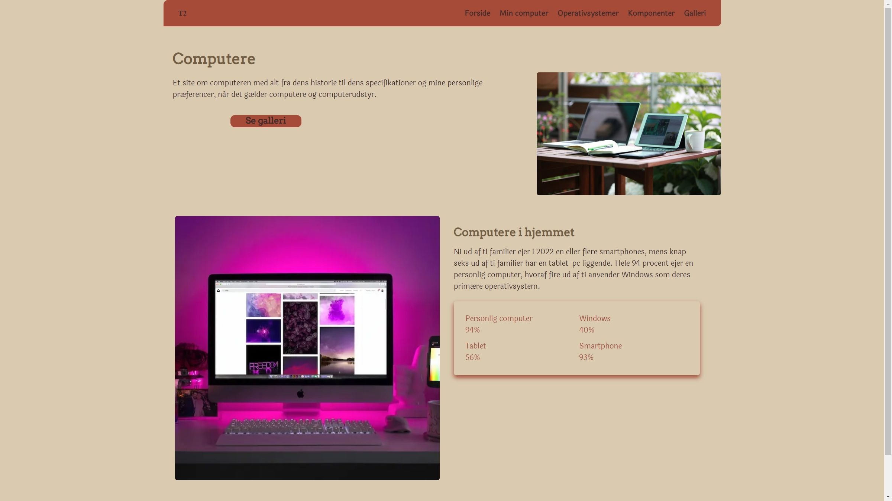
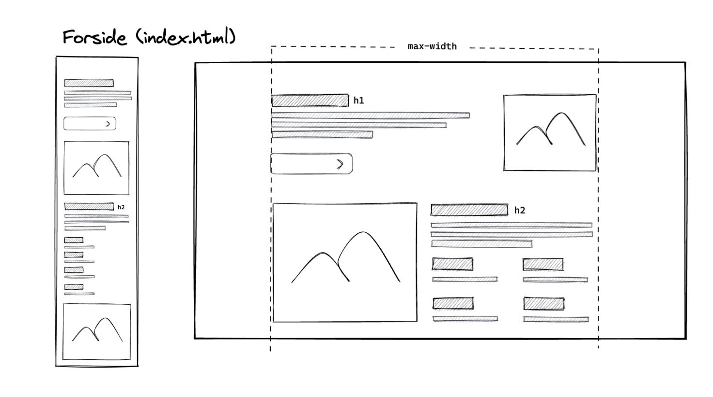
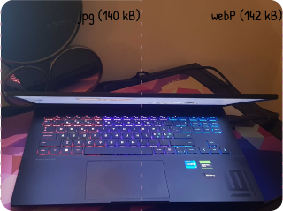

Tema 2: Grundlæggende web
Studiestartsprøven
Opgaven fra tema 2 var individuel, hvor jeg skulle lave en hjemmeside baseret på det givne
materiale.
Stil og tone måtte man vælge selv. Jeg valgte et kontrast koncept, hvor farvepaletten er
vintage,
modsat
det forventede såsom neon og sci-fi-tema, som normalt associeres med emner om computere.
Denne arbejdsmetode gav mig indsigt i, hvordan det bl.a. kan være for en MMD i praksis.
Hvad har jeg lært?
I temaet blev jeg introduceret til fundamentet i webdesign vha. HTML, CSS og i mindre grad JavaScript (menuen). Jeg lærte om designkonventioner, gestaltprincipper og responsivt design vha. Media queries, der tilpasser hjemmesiden fra mobil til desktop. Derudover lærte jeg også om CSS-layouts som grid og flex.
Værktøjer
Jeg brugte de værktøjer, der blev introduceret for, såsom:
-
Figma til at designe styletiles, wireframes og layoutdiagrammer, som var vigtigt ift. designprocessen.
-
Squoosh.app/Photoshop blev benyttet til billedredigering og konvertering af billeder til webP-format, som var vigtigt for at optimere og tilpasse billedmateriale til webplatformen.
-
Google Fonts og Fontsquirrel.com blev brugt til at finde passende skrifttyper og generere relevante fontformater såsom ttf til woff/woff2. Herudover blev der eksperimenteret med mulighederne for enten selv at hoste skrifttyper eller lade Google være vært for dem.
-
VS Code til at opsætte HTML, CSS og JavaScript, som var vigtigt ift. opbygningen af webplatformen.
Disse værktøjer hjalp mig i min arbejdsproces og bidrog til at skabe et solidt fundament for udviklingen af mit projekt.


Proces
Under min proces skulle jeg overveje, hvilke filformater der er mest hensigtsmæssige og bæredygtige, når det kommer til indhold på websites. F.eks. valgte jeg at bruge webP frem for png og jpg, da webP-formatet med en mindre filstørrelse bevarer en højere billedkvalitet sammenlignet med png og jpg, der komprimeres og har en større tendens til at blive pixeleret.
Samtidig var det vigtig, at jeg var opmærksom på brugen af skrifter og billeder ift. tilladelse til at anvende dem.
jpg (140 kB)
webP (142 kB)
Endelige produkt
Herunder er resultatet af mit arbejde baseret på tema 2.
Du er velkommen til at udforske siden og se mit projekt:
Studiestartsprøve
(website)